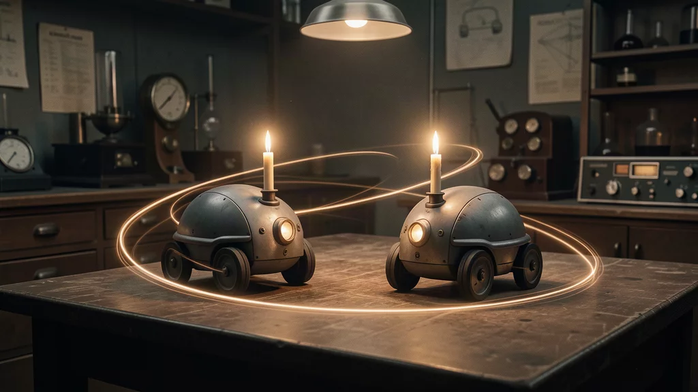

Although the words robot and robotics — and the science that followed the fiction — are decidedly 20th century, robotics has a long pre-history of ideas and inventions.
Perhaps the first known reference to the idea of an "intelligent" tool that could replace human labour comes from Aristotle, who wrote that "if every tool, when ordered, or even of its own accord, could do the work that befits it [...] then there would be no need either of apprentices for the master workers or of slaves for the lords".
Read it carefully: "when ordered, or even of its own accord". The distinction between a teleoperated tool and an autonomous one is already in the sentence.
A self-powered three-wheeled cart, powered by a falling weight that pulled strings wrapped around its axles. It has recently been discovered to be programmable by means of pegs in the axles, so that the direction of winding of the string on the axle can be reversed. The cart can therefore be programmed to turn and follow a preset route.
Hero cart already separates mechanism from program: the same cart runs different routes depending on how the pegs are set. That separation — a general execution engine plus a replaceable specification — reappears in this course as finite state automata (Chapter 6), behaviour trees (Chapter 8) and the genome of evolutionary robotics (Chapter 10).
The earliest reference to the idea of a humanoid automaton is found in Jewish folklore with the Golem: an animated humanoid being made of inanimate matter, normally clay, brought to life by magic. Its origins are controversial; one of the most famous stories relates how the 16th-century Rabbi Loew of Prague created a Golem to defend the city ghetto from attack.
A particularly interesting aspect of the mythical Golem is that it would interpret commands literally, with unintended and sometimes disastrous consequences. Winfield notes drily that this is also a property of modern robots, as roboticists are often painfully reminded. Every lab session in this course will supply a fresh example.
One of the most interesting and characteristically far-sighted automata of the Renaissance is Leonardo da Vinci autonomous cart. It is powered by clockwork springs, but the notable part is the system of replaceable cams controlling both the steering and the speed. These allow the cart to be programmed to follow a preset route — starting, stopping and turning as required. It could also be programmed to trigger a special effect at a preset time, such as opening a door on a sculpture mounted on the cart.
Leonardo might also be credited with the first design, c. 1495, for a complete humanoid robot: his robot knight, based on biomechanical principles from his anatomical research, with cable-driven arms, head and jaw.
During the 18th century mechanical automata reached a high degree of sophistication — as well as fakery. The French inventor Jacques de Vaucanson built three famous automata:
The duck famously defecated after "eating" grain. This was an illusion: the duck actually excreted a premixed preparation of dyed green breadcrumbs. True robotic artificial digestion would not appear for another 250 years.
In Japan, the tradition of karakuri ningyō — mechanised puppets or automata — ran from the 17th to the 19th century.
The duck is worth a moment of methodological reflection. From the outside the behaviour was perfect; the internal mechanism was a fraud. This is the historical ancestor of the frame-of-reference problem of Chapter 3: descriptions of behaviour from an observer perspective must not be taken as the internal mechanisms underlying the behaviour. Vaucanson audience made exactly that mistake.
Modern robotics depends on several key technologies — the electric motor to provide actuation, and electronic devices to provide the means to control and automate. But new ideas were needed too, and they came from a group of scientists working in the mid-20th century in what was then, and is sometimes still, called cybernetics.
The term began its rise to popularity in 1947, when Norbert Wiener used it to name a discipline apart from — but touching upon — electrical engineering, mathematics, biology, neurophysiology, anthropology and psychology. The word comes from a Greek root meaning "the art of steering", chosen to evoke the rich interaction of goals, predictions, actions, feedback and response in systems of all kinds.
| Figure | Contribution relevant to this course |
|---|---|
| Norbert Wiener | Named and framed cybernetics (1947) |
| Alan Turing | Computing Machinery and Intelligence (Mind, 1950); the child-machine and its explicit analogy with evolution (Chapter 10) |
| W. Ross Ashby | Design for a Brain (1960); homeostasis, essential variables, the double feedback model (Chapter 3) |
| Warren McCulloch | Formal neurons; the road to artificial neural networks |
| W. Grey Walter | The robot tortoises — the first autonomous electronic mobile robots |
The etymology is not trivia. "The art of steering" says that the object of study is not the machine and not the goal, but the loop that keeps a system on course while the world pushes it off. That is why Chapter 4 opens with feedback rather than with code.
Among the cybernetics group was the neurophysiologist W. Grey Walter, who holds a special place in the modern history of robotics for his robot tortoises, now widely regarded as the first autonomous electronic mobile robots. (They were so named because, after Lewis Carroll, they "taught us".)
Walter was convinced that the connections within the brain, and the number of connections, are of much greater importance in giving rise to intelligence than the number of brain cells. To make the point he designed the control system of the robots with, as he put it, "a simple two-cell nervous system" — the "cells" being vacuum tubes, the 1940s equivalent of the transistor. By ingeniously interconnecting the cells with the robot sensors and motors, the tortoises demonstrated four distinct behaviours:
| Behaviour | Mechanism |
|---|---|
| Explore (the default state) | The front wheel — which provides both steering and traction, like a child tricycle — rotates continuously, giving the robot a characteristic cyclic motion |
| Phototaxis | A photocell mounted at the top of the steering drive wheel makes the robot attracted by a strong light source at some distance |
| Anti-phototaxis | The same photocell repels the robot from the light source when it is very close |
| Obstacle avoidance | The perspex shell acts as a bump sensor; when triggered it changes the robot motion so it can escape the obstacle |
Two tortoises, named Elmer and Elsie, were fitted with candles and their movements captured on a long-exposure camera. In a dark room with no other light source, Elsie would catch sight of Elmer and vice versa, and the two robots would approach each other and engage in a kind of "dance".

Neither preprogrammed nor remotely controlled, Walter tortoises behave in a complex and unpredictable way that has as much to do with the operating environment as with the robot itself. These experiments anticipated ideas of behaviour-based robotics (Chapters 6–8) and swarm robotics (Chapter 9). Walter robots demonstrated ideas that were, to some extent, lost and rediscovered in the 1980s.
Set the light level and the bump switch, and read which of the four behaviours an outside observer would name. Notice that you are naming regions of one coupling, not selecting modules.
While Walter was building tortoises, a second and largely separate tradition was forming. It is the tradition that will produce deliberative control (Chapter 13) and planning (Chapter 14), and it is worth dating precisely because the argument between the two lineages is the backbone of Part II.
The Dartmouth proposal contains a line that is easy to skip and important to keep: "the major obstacle is not lack of machine capacity, but our inability to write programs taking full advantage of what we have." Seventy years later, the "current issues" list of Chapter 1 — limited autonomy, hard integration of capabilities — is still a statement about design methodology rather than about hardware.
Read the claim and choose. The point is not to score, it is to notice that the two traditions disagree about what a robot is, not merely about how to program one.
In the last decade, outstanding technological advancements have made it possible to build powerful and technologically reliable robots. There is a plethora of different kinds of robots, each with specific features — the lecture lists them as a gallery:
| Family | Note |
|---|---|
| Industrial robots | The economically dominant category; typically not autonomous in the sense of Chapter 1 |
| Rovers | Planetary exploration; the case where autonomy is forced by communication delay |
| Humanoid robots | Whole-body control, and the hardest integration problem |
| Home robots and robots for education | Vacuum cleaners; Thymio, used in the lab sessions of this course |
| Flying robots | Including aerial swarms (see Floreano work at EPFL, Chapter 9) |
| Swarms of robots | Chapter 9 |
| Soft robots | Chapter 16; one of the areas still to be fully explored |
The integration of AI and control theory methods into robotics has produced effective robotic systems. Yet, as the slides conclude, there is much room for improvement — and the improvements the course is interested in are the ones listed in Chapter 1: autonomy, integration of capabilities, and the joint achievement of robustness and adaptiveness.
It is programmable by means of pegs in the axles, which reverse the direction of winding of the string, so the cart can be made to turn and follow a preset route. It is missing sensors: it cannot acquire information about its environment, so it is not situated and cannot close the sensory-motor loop. By the Chapter 1 definition, an automaton is not a robot.
The system of replaceable cams controlling both the steering and the speed, which allows the cart to be programmed to follow a preset route — starting, stopping and turning as required — and even to trigger a special effect at a preset time. Power comes from clockwork springs.
From a Greek word meaning "the art of steering". Norbert Wiener used it in 1947 to name a discipline apart from, but touching upon, electrical engineering, mathematics, biology, neurophysiology, anthropology and psychology. The name was chosen to evoke the rich interaction of goals, predictions, actions, feedback and response in systems of all kinds.
Explore (default: the front wheel, which provides both steering and traction, rotates continuously, producing a cyclic motion); phototaxis (a photocell at the top of the steering drive wheel attracts the robot to a strong light source at a distance); anti-phototaxis (the same photocell repels it when very close to the source); obstacle avoidance (the perspex shell acts as a bump sensor and changes the motion so the robot escapes). All of this from "a simple two-cell nervous system" built with vacuum tubes.
Because, being neither preprogrammed nor remotely controlled, they behave in a complex and unpredictable way that has as much to do with the operating environment as with the robot itself — the central claim of behaviour-based robotics. And because two tortoises placed together produced an unplanned collective phenomenon (the "dance" of Elmer and Elsie) purely from local sensing — the central claim of swarm robotics. Winfield notes these ideas were to some extent lost and rediscovered in the 1980s.
The study proceeds "on the basis of the conjecture that every aspect of learning or any other feature of intelligence can in principle be so precisely described that a machine can be made to simulate it". Authors: J. McCarthy (Dartmouth College), M. L. Minsky (Harvard University), N. Rochester (I.B.M.) and C. E. Shannon (Bell Telephone Laboratories); the proposal is dated 31 August 1955 for a summer 1956 study.
That the mythical Golem interpreted commands literally, with unintended and sometimes disastrous consequences — a property of modern robots too. A specification that is satisfiable in a way you did not intend will be satisfied that way. This is the same failure mode that reappears as a badly designed fitness function in Chapter 10 and a badly designed reward function in Chapter 12.
Industrial robots, rovers, humanoid robots, home robots and robots for education, flying robots, swarms of robots, soft robots. The last three are among the areas the course flags as "still to be fully explored", together with automatic design.